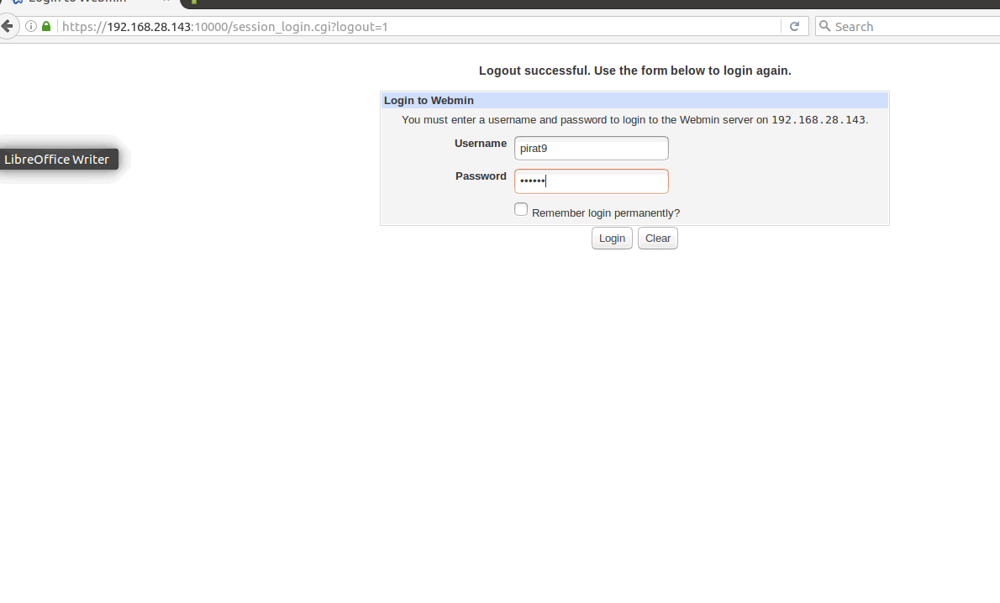
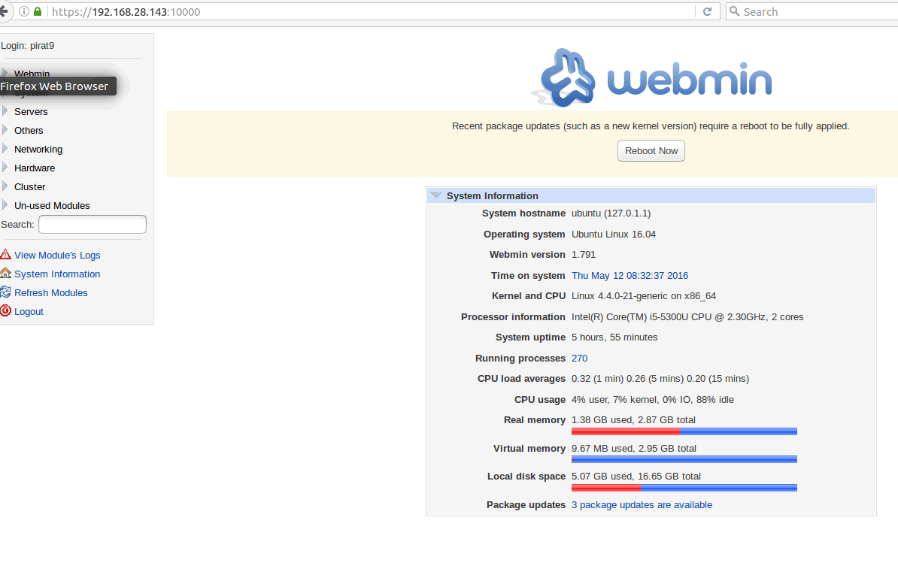
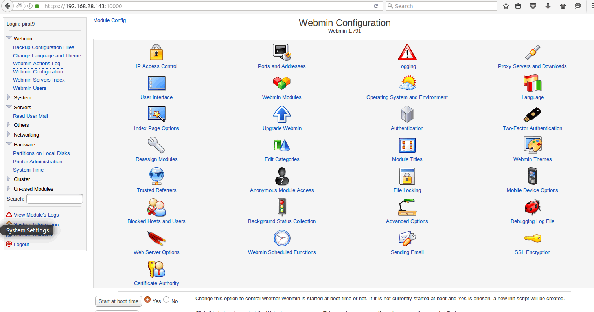

Настройка Webmin на Ubuntu 16.04
Получить доступ к интерфейсу Webmin можно просто набрав адрес вашего сервера и порт 10000 в адресной строке браузера. По умолчанию Webmin использует https, поэтому вам тоже нужно будет применить этот протокол. Адрес будет выглядеть вот так:
https://ip_адрес:10000
Браузер предупредит, что сертификат SSL не является доверенным, это происходит потому, что webmin автоматически создает свой сертификат после установки. И поскольку этот сертификат был выдан не удостоверяющим центром, браузер не может считать его надежным. Но мы знаем, что это наш сервер, поэтому можем продолжить.
На следующем экране вам нужно будет ввести свой логин и пароль на сервере для входа в веб-интерфейс. Этот пользователь должен иметь полномочия суперпользователя:

Вот так будет выглядеть главная страница:


На первой странице показана общая информация о системе, которая поможет вам понять с какой системой вы сейчас имеете дело. Также здесь будет показаны обновления Webmin если они есть.
В левой части экрана вы найдете меню навигации, с помощью которого вы получите доступ к различным модулям Webmin и сможете управлять сервером. В разделе Webmin содержаться настройки самой программы Webmin, другие разделы отвечают за другие системные службы или параметры.
Вот и все, установка Webmin на Ubuntu Server 16.04 завершена и теперь вы можете настраивать свою систему удаленно. Это может быть очень полезно, когда вы не можете или не хотите использовать терминал. Если у вас остались вопросы, спрашивайте в комментариях!
Похожие записи:
Нет похожих записей